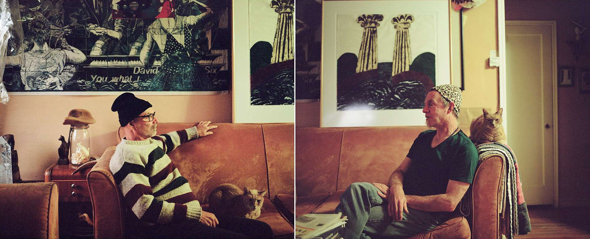

<%= !json.project.embedded ? t.include("partials/_paywall.html") : t.include("partials/_embedframe.html") %>
<%= t.include("partials/_headtwo.html") %>
<%= !json.project.embedded ? "" : "" %>

Ralph Thurlow (left) and David Spiher at their Hayward home, seen in a combination of two photographs. Erin Brethauer, Special to The Chronicle
Last Men Standing
Hoping, thriving, grieving, surviving
Forgotten Survivors of AIDS: Catching up with the Bay Area men who lived through an epidemic and are still fighting for their lives
By Erin Allday
December 2016
<%= t.include("partials/_navtwo.html") %>

Ganymede, one of the “Last Men Standing” subjects, takes a deep breath outside his home in Oakland. Erin Brethauer, Special to The Chronicle
Searching for ‘pathways to humanity’
<%= t.include("partials/vignettes/_ganymede.html") %>
Read Ganymede's original story in “Last Men Standing.”

Eileen Glutzer drinks from a mug painted by her late friend, Peter Greene, who had made her a mug every year as a gift. Erin Brethauer, Special to The Chronicle
Confronting the death of a friend
<%= t.include("partials/vignettes/_peter.html") %>
Read Peter Greene's original story in “Last Men Standing.”
<%= t.include("partials/_credits.html") %>
<%= t.include("partials/_vignettes_footer.html") %>
<%= t.include("partials/_helloSFC.html") %>